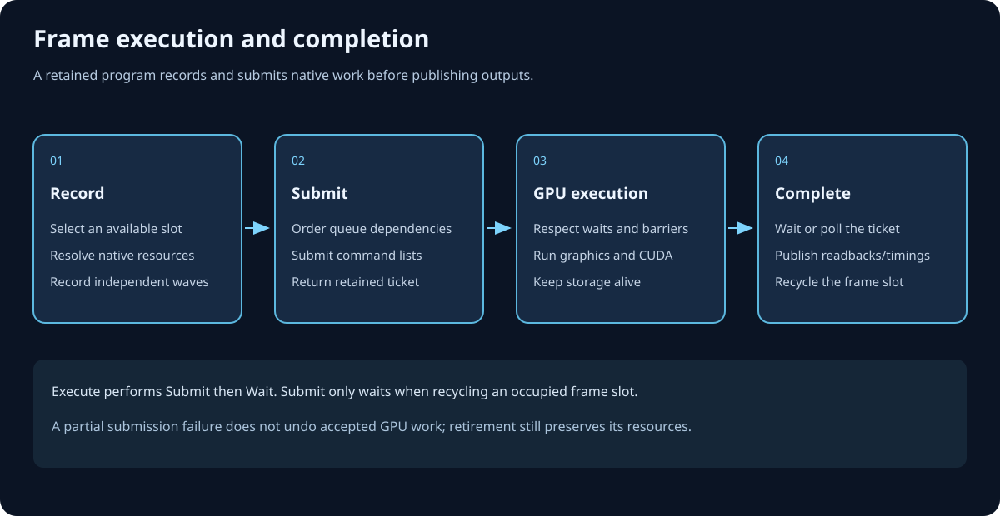

Execution and frame completion
Submit a compiled graph, track its frame ticket, and retire GPU work to publish readbacks.
Learning objectives
Choose synchronous or ticket-based execution and interpret queue handoff, readback completion and partial failure.
Compile, submit and retire a frame
Compile() returns a status on the calling thread. Submit() records commands and returns a ticket for submitted GPU work. Execute() submits and waits for the frame, including readbacks. The synchronous compatibility names CompileAndWait(), SubmitAndWait(), and ExecuteAndWait() forward to these operations.
if (auto Status = Graph.Compile(); !Status) return Status;
auto Frame = Graph.Submit();
if (!Frame) return Frame.mStatus;
// The caller can work while the GPU executes the submitted frame.
return Graph.Wait(Frame.mValue).mStatus;Set mFramesInFlight to control how many independent transient slots the graph can use. Reusing an occupied slot retires its previous frame. For a data handoff across graphs, wait for the producer before submitting the consumer. Coordinate host threads when sharing mutable graphs or borrowed inspection results.
Native recording
The compiled program resolves resources and automatic pipeline slots before callbacks. FArdaGraphExecuteOptions controls resource-state validation. Compiler rules select pipeline batching and automatic instance candidates. Compatible operations in a compiler pipeline batch record into one native command list, retaining per-operation bindings and draw/dispatch commands. Eligible traditional draws may merge after runtime compatibility checks. Dependent commands inside one callback still need their internal barriers. See pipeline batches and instance merging.

Host and GPU execution
Host threads can record independent edit scopes. The submitting thread records command lists in compiled order. Native queues can overlap work wherever resource dependencies, ownership transfers and fences allow it.
Ownership and waits
Dependencies include resource handoff, physical aliasing and shared inter-frame storage. D3D12 uses state transitions and queue fence waits; Vulkan also tracks queue-family ownership. Imports enter and leave on graphics. Used imported textures return to the uniform state captured by a read-only query during first-submission materialization; they must be initialized or acquired before that query and cannot enter in Unknown or Discard. Callers must preserve or restore the captured contract before replay. Imported buffers return to descriptor initial state. Retirement waits for this graph’s submissions rather than device-wide idle.
CUDA graph replay
Retained sequences capture kernels and opted-in external calls. Changing graphics interop waits/signals stay outside captured executables. Each frame slot owns caches; exact argument/address variants select bounded cached executables. Disabled, Prefer and Require modes control fallback. See CUDA sequences.
Completion publication
Readback records asynchronous transfers, then publishes host vectors after successful completion. Failed frames clear destinations. Tickets remain valid after slot reuse and edits. Use distinct destinations when several results must coexist.
Nonblocking GPU telemetry
Timing is optional and disabled by default. With mbEnableGpuTiming, sampled frames record one timestamp interval per native pipeline batch on supported graphics, compute and copy queues. A singleton batch measures one node. CUDA event regions measure individual semantic nodes within their existing batch, excluding surrounding graphics/CUDA handoffs. Unsupported queues omit samples without queue migration. Stage-only and pure synchronization nodes have no GPU interval.
CollectTelemetry() and SubmitAndWait() poll completed work and available queries; collection adds no GPU wait. Query setup or polling failures can discard samples without invalidating a successful frame. An unsafe failure ending an already-started native query instead rejects recording and preserves the provider error. ExecuteAndWait() still submits and waits, and asynchronous submission can still wait when recycling an occupied frame slot. GetTimingProfile() exposes EMA statistics; GetTimingHistory() exposes bounded raw durations for singleton nodes. Multi-node native batches remain aggregate samples in the timing profile; adaptive scheduling apportions their duration according to current node costs as estimates, not independently measured node timings.
Optional adaptive scheduling prepares a replacement on a worker while the current program remains active. Adoption reuses the same allocations and waits for no GPU work: it proceeds only when all old frame slots and readbacks can naturally retire. Continuous saturation may defer adoption. Call CollectTelemetry() or keep submitting, and inspect GetAdaptiveSchedulingStats() for pending work and accepted plans. See the configuration and telemetry guide for defaults, sampling overhead and manual requests.
Execution evidence
FArdaGraphExecutionResult exposes status, submitted list count, queue waits/dependencies, pool/alias activity, submission IDs and state conformance. Pass indices identify lowered work, including generated boundaries; they are not semantic node handles. The compile report uses semantic identities.
Partial failures
Failed submission may still carry a ticket for accepted GPU work. Its resources stay retained until retirement. Repair an invalidated execution plan through an edit before retrying. Shared input storage must remain valid until recording and GPU uses complete.
Chapter summary
Submit schedules retained native work; Wait completes this frame and publishes results. Accepted GPU work retains its resources even when later work fails.
Source and API
Read the developer guide, pipeline guide, public API reference and graph declarations.